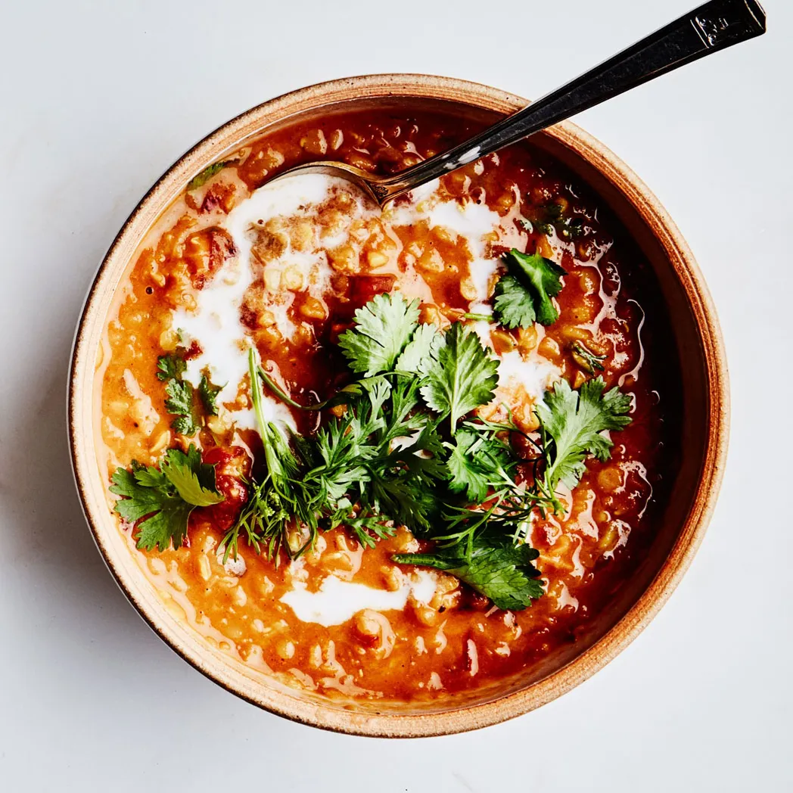

Home
Curried Lentil, Tomato, and Coconut Soup

This curried lentil soup recipe from chef and cookbook author Yotam Ottolenghi is “way more delicious than it should be,”
declared one former colleague, for whom it was a go-to dinner. Her reaction was partly due to the soup's ease (it's made
almost entirely from pantry ingredients). But it’s also nourishing, hearty, and gluten-free, and it requires extremely little prep time.
The magic happens courtesy of red lentils, which break down, turning the broth creamy. You could use yellow lentils, but
brown lentils and green lentils retain more texture, so save them for another purpose.
Ottolenghi calls for Japanese S&B curry powder, which can be considered mild to medium in heat, but you can use any blend
you like based on your tolerance. You can adjust the other ingredients too: Stir in a peeled and diced sweet potato or half a
butternut squash right at the beginning, or add the last handful of some slightly wilted baby spinach just before serving.
The chef also calls for water to round out the broth—with so many flavorful ingredients, this really will suffice, but if you
have a bit of vegetable broth (or even chicken broth) open, feel free to use it.
A final drizzle of coconut milk adds a lush finish, while lime juice and fresh cilantro brighten everything up. Serve with
warm charred naan for dunking.
Sourced from Bon Appétit
Yield = 4 servings
- 2 tbsp virgin coconut oil or extra-virgin olive oil
- 1 medium onion, finely chopped
- 2 garlic cloves, finely chopped
- 1 (2.5") piece fresh ginger, peeled and finely grated
- 1 tbsp curry powder (such as S&B)
- 1/4 tsp crushed red pepper flakes
- 3/4 cup red lentiles
- 1 (14.5 oz) can crushed tomatoes
- 1/2 cup finely chopped cilantro (plus leaves w/tender stems for serving)
- Kosher salt
- Freshly ground black pepper
- 1 (13.5 oz) can unsweetened coconut milk, shaken well
- Lime wedges (for serving)
- Warm virgin coconut oil or extra-virgin olive oil in a medium saucepan on the stovetop over medium heat.
- Cook onion, stirring often, until softened and golden brown for 8-10 mins.
- Add garlic cloves, fresh ginger, curry powder, and crushed red pepper flakes and cook, stirring, until fragrant for about 2 mins.
- Add lentils and cook, stirring, for 1 min.
- Add crushed tomatoes, chopped cilantro, a generous pinch of kosher salt, and 2.5 cups water; season with black pepper.
- Set aside 1/4 cup liquid from unsweetened coconut milk for serving. Add remaining coconut milk to saucepan.
- Bring mixture to a boil, then reduce heat and simmer gently, stirring occasionally until lentils are soft but not mushy for 20-25 mins.
- Season soup with more salt and pepper if needed.
- To serve, ladle soup into bowls. Drizzle w/reserved coconut milk, garnish with more cilantro, and add lime wedges.
Note: Soup (without toppings) can be made 3 days ahead. Let cool; store in an airtight container and chill. Reheat over medium heat until simmering.